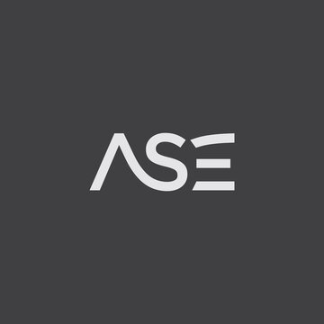
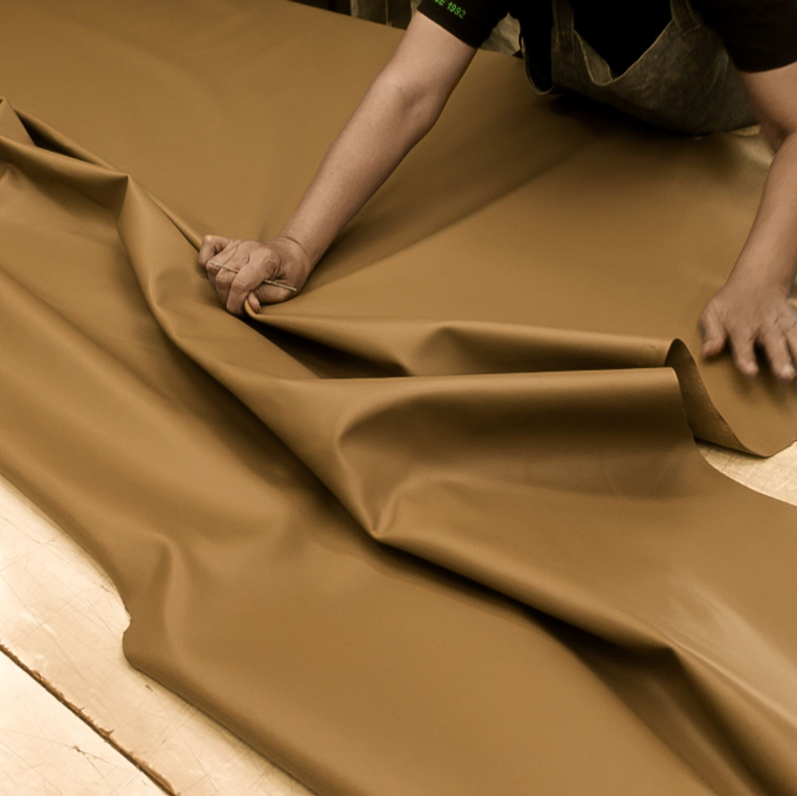
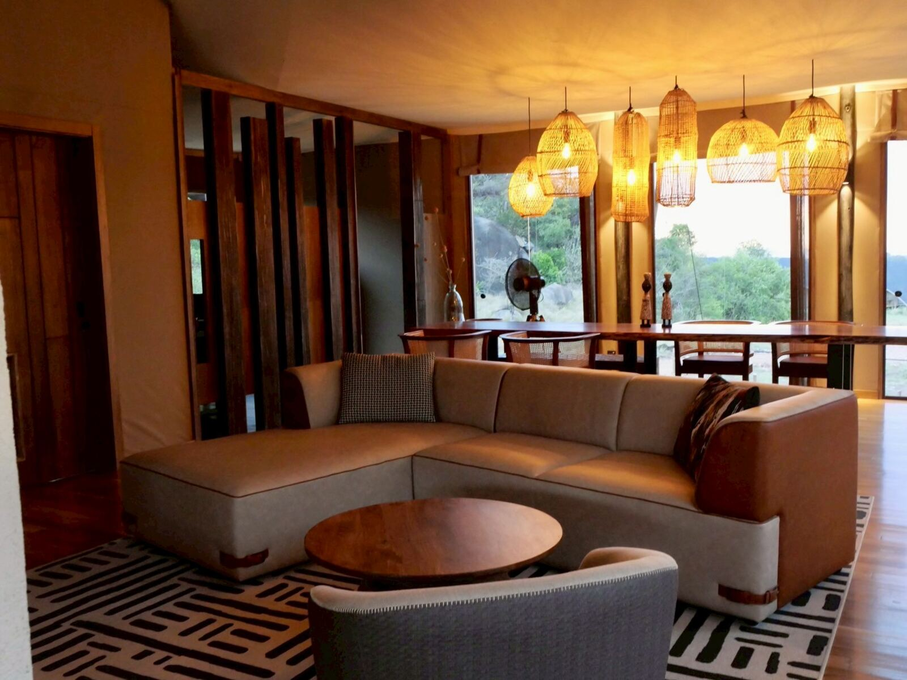
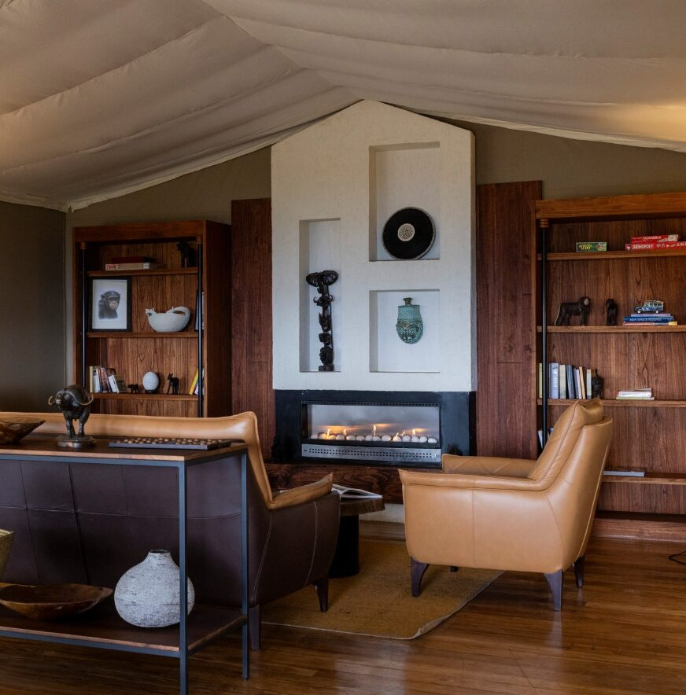
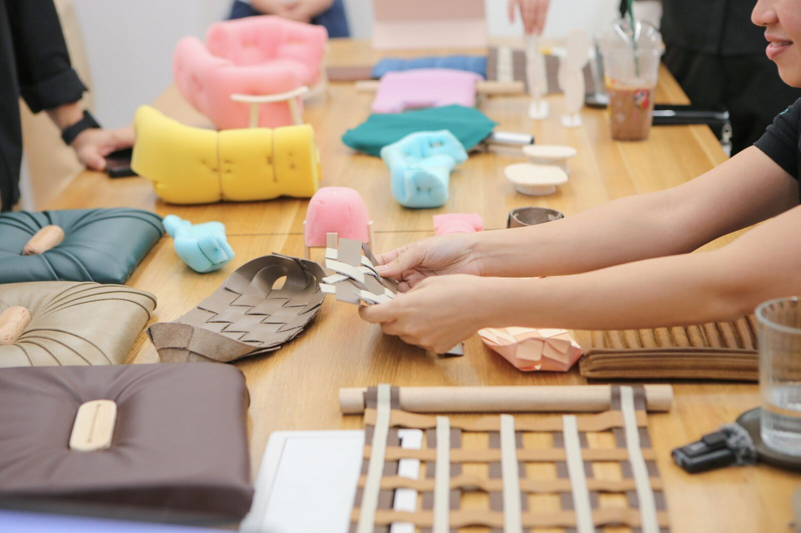
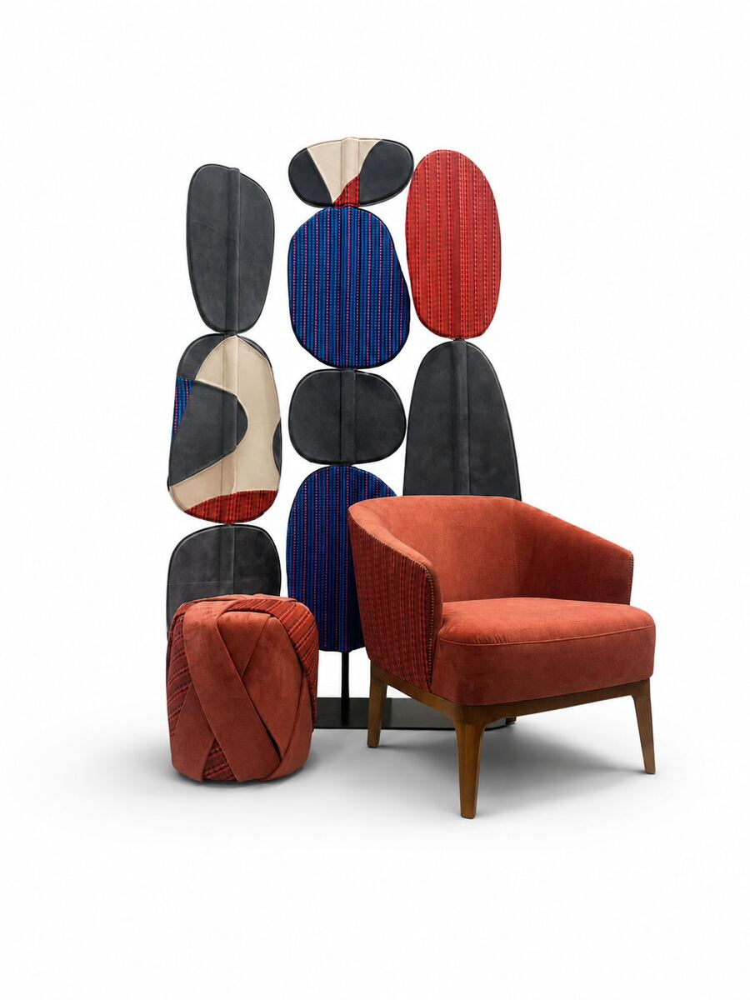

บริษัท เอเซ่ จำกัด (ASE) คือผู้พัฒนาและผลิตเฟอร์นิเจอร์สัญชาติไทย เชี่ยวชาญด้านงานหุ้มบุ (Upholstery) การพัฒนาผลิตภัณฑ์ และงานสั่งผลิตทั้งสำหรับโรงแรม ร้านอาหาร สปา และบ้านที่อยู่อาศัย

ด้วยประสบการณ์กว่า 30 ปีในการผลิตและส่งออกเฟอร์นิเจอร์ ไปยังประเทศญี่ปุ่น เกาหลี และยุโรป การร่วมงานกับดีไซเนอร์ไทยและนานาชาติอย่างยาวนานทำให้ ASE สั่งสมความเชี่ยวชาญ ตั้งแต่การออกแบบโครงสร้าง การเลือกใช้วัสดุ งานตัดเย็บและหุ้มบุที่ประณีต ไปจนถึงการลงรายละเอียดและการควบคุมคุณภาพในทุกขั้นตอนการผลิต

ปัจจุบัน ASE ถ่ายทอดความเชี่ยวชาญผ่าน 4 กลุ่มบริการหลัก เพื่อตอบโจทย์ทุกมิติของงานดีไซน์:
ASE Living — เฟอร์นิเจอร์พร้อมใช้งานสำหรับพื้นที่อยู่อาศัยที่เน้นฟังก์ชั่นและความประณีต

ASE Projects — การพัฒนาและผลิตเฟอร์นิเจอร์สั่งทำพิเศษ (Bespoke Furniture) สำหรับโครงการ Hospitality, Commercial และ Residential โดยทำงานอย่างใกล้ชิดร่วมกับสถาปนิก อินทีเรียดีไซเนอร์ และผู้พัฒนาโครงการ

ASE Studio — พาร์ทเนอร์ในการสรรค์สร้างชิ้นงาน ร่วมมือกับนักออกแบบ ศิลปิน และแบรนด์ เพื่อเปลี่ยนแนวคิดเชิงศิลปะและจินตนาการให้กลายเป็นชิ้นงานจริงที่ใช้งานได้ในชีวิตประจำวัน

ASE Reform — การต่ออายุและเพิ่มคุณค่าให้กับเศษวัสดุและเฟอร์นิเจอร์ ผ่านการดีไซน์และพัฒนาให้กลับมามีชีวิตใหม่อย่างยั่งยืน
นอกจากนี้ ASE ยังเป็นผู้พัฒนาแบรนด์ Chaw Cher (ฌ เฌอ) แบรนด์เฟอร์นิเจอร์ที่ถ่ายทอดความชำนาญสั่งสม ออกมาเป็นชิ้นงานที่ตอบโจทย์ไลฟ์สไตล์การอยู่อาศัยในทุกๆ วัน
ตั้งแต่ไอเดียตั้งต้น การคัดสรรวัสดุ การทำต้นแบบ จนถึงการผลิตจริง ASE คือผู้ช่วยช่างฝีมือที่พร้อมเปลี่ยนทุกความฝันและความคิดสร้างสรรค์ ให้กลายเป็นเฟอร์นิเจอร์ที่ตอบโจทย์การใช้งานจริง โดยยังคงเจตนารมณ์และความงดงามของงานออกแบบไว้อย่างสมบูรณ์แบบ